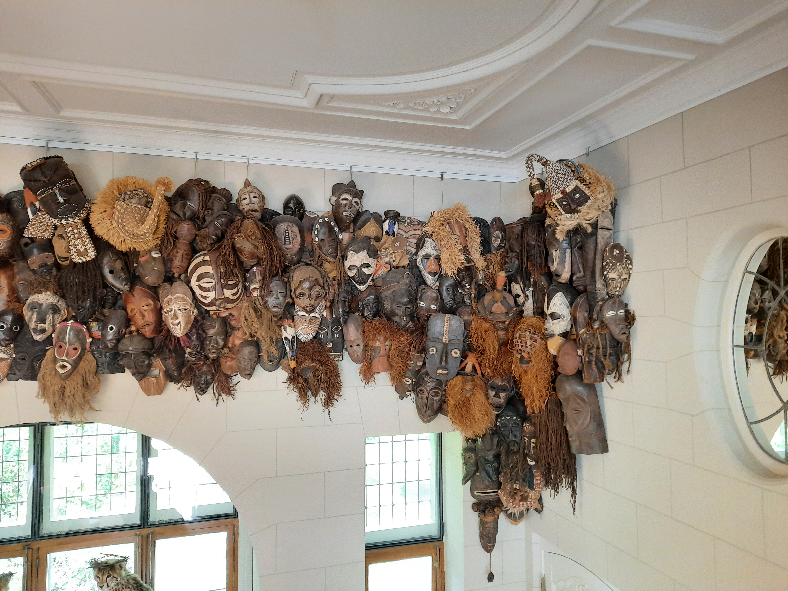

Geweldloze & verbindende communicatie
Het is voor mij belangrijk om respectvol met elkaar om te gaan, ook met elkaars verschillen. Taal speelt hier een
zeer belangrijke en krachtige rol in. Wat in onze binnenwereld gebeurt, brengen we naar buiten in taal. Dit onder de
vorm van onze gedachten, onze gevoelens, onze ervaringen en onze noden. Lang voor ik ‘Geweldloze Communicatie’
kende, communiceerde ik vaker op een gewelddadige manier. Ik was me niet echt bewust van mijn eigen gevoelens, en al
zeker niet van mijn behoeften. Wat ik zag en hoorde werd door interpretaties en oordelen, beperkende overtuigingen
gekleurd, ik reageerde op verwijtende of oordelende toon.

Wat hier voor mij een eyeopener was, was dat alles start met zelfreflectie. Ik leerde dat ik zelf eigenaar ben van
mijn gevoelens, alsook impact heb op de manier waarop ik reageer op een trigger….
Het model van geweldloze communicatie is gebaseerd op bewustzijn en is bedoeld om onze gedachten, gevoelens en behoeften duidelijk te verwoorden. Geweldloze communicatie doorbreekt de patronen van verdedigen, terugtrekken of aanvallen die wij gewend zijn toe te passen als we met kritiek en oordelen worden geconfronteerd. De vorm is eenvoudig en tegelijk krachtig transformerend. Marshall Rosenberg schrijft: “ Om geweldloos te communiceren is geen specifieke kennis of vaardigheid vereist, wel bewustzijn en vasthouden aan het model. Bewustzijn over de intentie die ons denken en ervaren stuurt. De intentie om te geven en te ontvangen vanuit mededogen, vanuit het vermogen ons te kunnen inleven in elk gevoel en elke behoefte. De intentie om respectvol te zijn voor elke ervaring en elk verzoek. Intentie om kwetsbaarheid te aanvaarden als een krachtig vermogen. De intentie om onszelf in de ander te herkennen. Zelfs al zijn wij de enige gesprekspartner die dat doet, dan nog kunnen wij geweldloos communiceren en een proces op gang brengen.” Op die manier ontstaat er wederkerigheid. Er groeit een mooi proces waarin harmonie en verbondenheid is. Als individu ontplooi je jezelf alsmaar meer en meer, dieper en verder. In volle VRIJheid. Als individuen op een manier kunnen communiceren met elkaar die verbindt, worden er ook minder energielekken gecreëerd door misvattingen, veronderstellingen of conflicten. We ervaren duurzame en versterkende relaties met onszelf en de anderen. Er wordt effectiever en efficiënter gecommuniceerd.
Het model van geweldloze communicatie is gebaseerd op bewustzijn en is bedoeld om onze gedachten, gevoelens en behoeften duidelijk te verwoorden. Geweldloze communicatie doorbreekt de patronen van verdedigen, terugtrekken of aanvallen die wij gewend zijn toe te passen als we met kritiek en oordelen worden geconfronteerd. De vorm is eenvoudig en tegelijk krachtig transformerend. Marshall Rosenberg schrijft: “ Om geweldloos te communiceren is geen specifieke kennis of vaardigheid vereist, wel bewustzijn en vasthouden aan het model. Bewustzijn over de intentie die ons denken en ervaren stuurt. De intentie om te geven en te ontvangen vanuit mededogen, vanuit het vermogen ons te kunnen inleven in elk gevoel en elke behoefte. De intentie om respectvol te zijn voor elke ervaring en elk verzoek. Intentie om kwetsbaarheid te aanvaarden als een krachtig vermogen. De intentie om onszelf in de ander te herkennen. Zelfs al zijn wij de enige gesprekspartner die dat doet, dan nog kunnen wij geweldloos communiceren en een proces op gang brengen.” Op die manier ontstaat er wederkerigheid. Er groeit een mooi proces waarin harmonie en verbondenheid is. Als individu ontplooi je jezelf alsmaar meer en meer, dieper en verder. In volle VRIJheid. Als individuen op een manier kunnen communiceren met elkaar die verbindt, worden er ook minder energielekken gecreëerd door misvattingen, veronderstellingen of conflicten. We ervaren duurzame en versterkende relaties met onszelf en de anderen. Er wordt effectiever en efficiënter gecommuniceerd.

‘Ver voorbij de ideeën over goed en fout is een plek. Ik ontmoet jou daar.’ Rumi